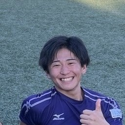

送り迎えを、
ひとりで抱えない。
地域で信頼できる人と保護者をつなぎ、子どもの日々の移動を支えます。大学生がはじめた、地域の送迎の支え合いです。

運営者・大学生
桑原 光輝
地域の送り迎えを、ひとりで抱え込まずに気軽に頼りあえる形にしたいと思っています。
👪
無料モニター募集
保育園・学童・習い事への徒歩送迎を、無料でお試しいただけます。
🤝
送迎協力者（託送者）募集
「地域の子どもを見守りたい」という方へ。事前の確認と研修のうえで活動いただけます。
ご関心に合わせてお選びください
※ LINEの友だち追加だけでは利用・活動の登録にはなりません。追加後、トークでご質問・ご相談いただけます。